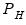
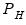

|
|
|
 ) and high () values for the cycle range to be passed through (specified in periods of the workfile frequency).
) and high () values for the cycle range to be passed through (specified in periods of the workfile frequency).  where
where  is the user-specified lag length order. For these filters, the weights on the leads and the lags are the same, so the returned matrix contains only the one-sided weights. The filtered series
is the user-specified lag length order. For these filters, the weights on the leads and the lags are the same, so the returned matrix contains only the one-sided weights. The filtered series  may be computed as:
may be computed as: where
where  is the number of non-missing observations in the current sample. Row
is the number of non-missing observations in the current sample. Row  of the matrix contains the weighting vector used to generate the
of the matrix contains the weighting vector used to generate the  -th observation of the filtered series, where column
-th observation of the filtered series, where column  contains the weight on the
contains the weight on the  -th observation of the original series. The filtered series may be computed as:
-th observation of the original series. The filtered series may be computed as: is the original series and is the
is the original series and is the  element of the weighting matrix. By construction, the first and last rows of the weight matrix will be filled with missing values for the symmetric filter.
element of the weighting matrix. By construction, the first and last rows of the weight matrix will be filled with missing values for the symmetric filter.